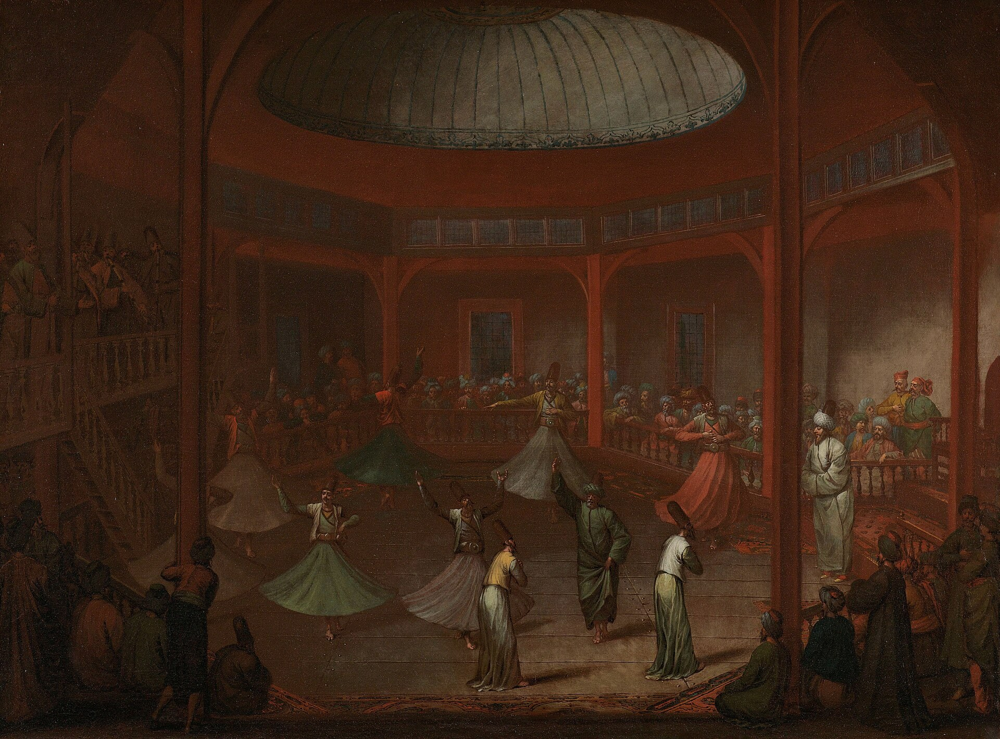
第2回
床の上の誰ひとりとして、どこかへ向かってはいない。それでも堂の中は、回る働きで満ちている。
Jean Baptiste Vanmour／Public domain／Wikimedia Commons（《旋回するダルヴィーシュたち》1720〜37年頃、アムステルダム国立美術館）
2026-10-06／講義資料「第2回」（教科書 2.2節 p.13–17）の範囲。力の和が 0 でも、物体は回りうる。第1回の $\sum\boldsymbol F=\boldsymbol 0$ だけでは捉えきれない「回す働き」を、力×腕の長さ＝モーメントとして数える。2次元の外積を用意し、バリニオンの定理、偶力、力を別の点へ移す操作までを、すべて一つの式 $M=F_yr_x-F_xr_y$ から導く。
授業の共通の題材「小型移動マニピュレータ」の腕を水平に伸ばし、先に 100 N（約 10 kgf）の荷物を吊るす（講義資料の例題）。
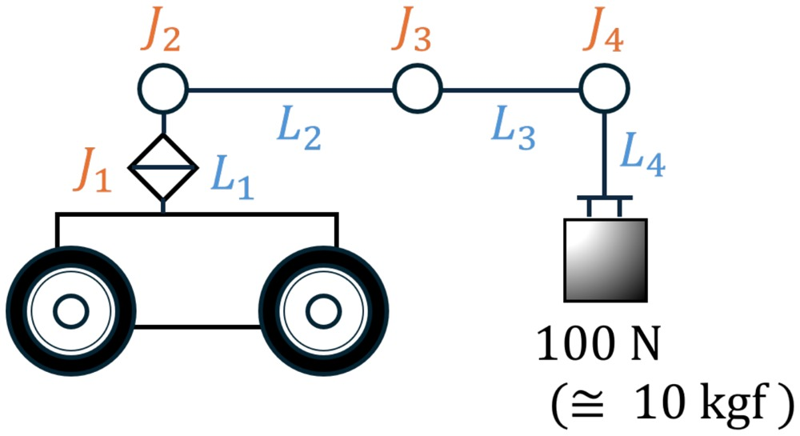
第1回の道具だけで考えると、腕と荷物に働く力の和を 0 にすればよい。関節が荷物と同じ 100 N を上向きに支えれば、それで済むように見える。ところが実際には、関節を自由に回れるようにしておくと腕は垂れ下がる。力の大きさと向きのほかに、「どこに働くか」で決まる働きがある。この働きを数える量がモーメントである。答えは 6.4 節で出す。
講義資料が挙げた「今日のポイント」は次の4つ。本教材の章と対応させておく。
動機：第1回では、止まっている質点について $\sum\boldsymbol F=\boldsymbol 0$ を導いた。では、大きさのある物体（剛体）でも、力の和が 0 なら止まっていると言えるか。
反例はすぐ作れる。自動車のハンドルの左端を下へ 30 N、右端を上へ 30 N で押す。2つの力を足すと $(0,\,-30)+(0,\,30)=(0,\,0)$ で、和は 0 である。それでもハンドルは回り出す。ハンドルの中心は動かないが、全体が回る。
つまり剛体では、力の和（並進させる働き）とは別に、回転させる働きを数える必要がある。この「物体を回転させる作用」が、力のモーメント（moment）である。とくに軸のまわりのモーメントをトルク（torque）とよぶ（講義資料 2・2・1）。モータの出す「トルク」はこれである。
回す働きをどう数えるかは、数学から決まるのではなく、実験で決まる。いちばん古い実験は天秤（てこ）である（教科書 図2.25）。
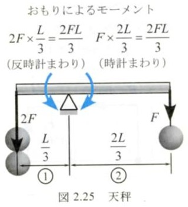
支点から左へ $L/3$ の所に重さ $2F$、右へ $2L/3$ の所に重さ $F$ を吊ると、棒は水平のまま止まる。重さは 2 倍違うのに釣り合うのは、力と支点からの距離の積が左右で等しいからである。
図2.25 で、左のおもりと右のおもりが支点のまわりに棒を回そうとする働き（力×距離）をそれぞれ求め、どちら向きに回そうとするかを答えよ。
解答
① 左：$2F\times\dfrac{L}{3}=\dfrac{2FL}{3}$。左側が下がる向き＝反時計回り。
② 右：$F\times\dfrac{2L}{3}=\dfrac{2FL}{3}$。右側が下がる向き＝時計回り。
③ 大きさが等しく向きが逆なので、回す働きは打ち消し合い、棒は回らない（観察どおり）。
この事実（てこの原理）を、次のように一般化して定義する。
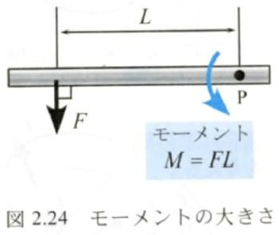
腕が「着力点までの距離」ではなく「作用線までの垂線」である理由は、第1回 3.1 節にある。剛体では、力を作用線に沿ってずらしても働きは変わらない（力の伝達性。これも経験から確かめられた事実）。作用線上のどの点で押しても同じなら、回す働きは「点」ではなく「線」の位置で決まるはずで、点 P から線までの距離として最も自然なのが垂線の長さである。天秤のおもりは真下に引くので、支点からの水平距離がちょうど垂線になっていた。
長さ 0.25 m のレンチの先端を、柄に直角に 200 N で押す。ボルトの中心まわりのモーメントの大きさを求めよ。
解答
① 力は柄に直角なので、作用線へ下ろした垂線は柄そのもの。腕 $L=0.25\ \mathrm m$。
② (1.1)：$M=FL=200\times0.25=50.0\ \mathrm{N\cdot m}$。
③ 単位の確かめ：$\mathrm N\times\mathrm m=\mathrm{N\cdot m}$。同じ 200 N でも、柄の中ほど（0.125 m）を押せば 25.0 N·m に半減する。長いレンチが効くのはこのため。
天秤の例題1で見たように、回す働きには向きがある（今日のポイント1）。向きは2つしかない。
向きを式に入れるため、符号をつける。
なぜ反時計回りが＋なのか：座標軸を「$x$ を右、$y$ を上」にとると、$x$ 軸の向きを $y$ 軸の向きへ 90° 回す向きが反時計回りになる。角度 $\theta$ を $x$ 軸から反時計回りに測るのと同じ約束である（第1回 2.4 節）。この約束にしておくと、2章の外積の符号と自動的にそろう。
モーメントは「実際に回っている」ことを意味しない。回そうとする働きが、ほかの働きで打ち消されていることもある（講義資料 2・2・1 の4）。
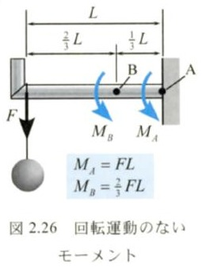
壁に固定した長さ $L$ の棒の先に、重さ $F$ のおもりを吊る（図2.26）。棒は回らないが、壁の点 A のまわりには $M_A=FL$、先端から $\tfrac13L$ 離れた点 B のまわりには $M_B=\tfrac23FL$ のモーメントが働いている（どちらも時計回り）。棒が回らないのは、壁が逆向きのモーメントで押し返しているからである（これを求めるのが第4回の釣合い）。どの点まわりで考えるかで値が変わることにも注意しておく。点 B の値は、棒を B で切ったとき、切り口が耐えなければならない「曲げ」の大きさになる（材料力学の入口）。
講義資料 2・2・2 は、モーメントについて次のことを述べている。
証明（定義から）：腕 $L$ は「点 P から作用線への垂線」の長さだった。同じ作用線上のどの点に力が働いても、作用線そのものは同じなので、垂線も同じ。したがって $M=FL$ も同じ。□
確かめ（別の計算・スライドの図）：同じことを、着力点をずらして計算し直しても確かめられる。
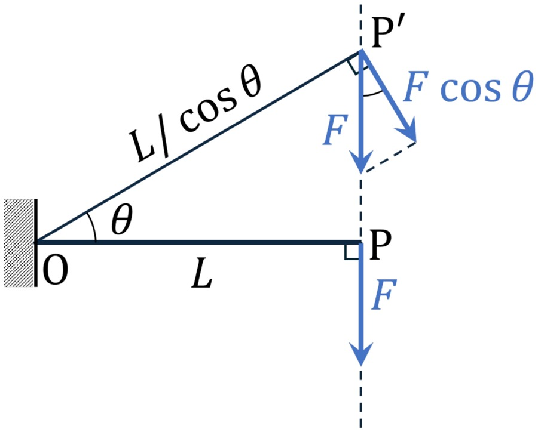
STEP 1（P で押す） O から水平に $L$ 離れた点 P に、下向きの力 $F$。作用線は P を通る鉛直線で、O からの垂線は OP そのもの。$M=FL$（時計回り）。
STEP 2（同じ鉛直線上の P′ で押す） P′ は OP と角 $\theta$ をなす向きにあり、直角三角形 OPP′ で $\cos\theta=\dfrac{OP}{OP'}$ なので $OP'=\dfrac{L}{\cos\theta}$。
STEP 3（力を OP′ 方向と、それに垂直な方向に分ける） OP′ に沿う成分は作用線が O を通るので回す働きがない。垂直な成分の大きさは $F\cos\theta$（下向きの $F$ と OP′ の法線のなす角が $\theta$ だから）。この成分は「棒 OP′ に直角に押す力」なので、腕は $OP'$。
STEP 4（掛ける） $\dfrac{L}{\cos\theta}\times F\cos\theta=FL$。STEP 1 と一致する。
（STEP 3 で「成分ごとに回す働きを足してよい」としたのは、3章のバリニオンの定理を先取りしている。定理は 3.3 節で証明する。）
□
1つの物体に何本も力が働くとき、点 P まわりの合モーメントは、各力のモーメントを符号を含めて足したものとする（講義資料 2・2・2、教科書 図2.27・2.28）。 $$M=\sum_i M_i\qquad(1.3)$$ これも天秤の実験（反時計回りと時計回りが等しいと回らない）に合う約束である。
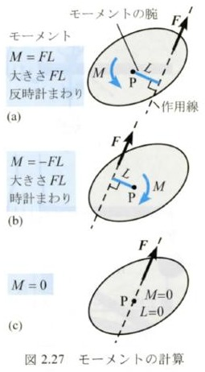
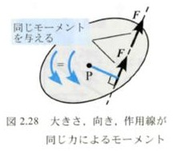
水平な棒の左端 O から 0.5 m の点に下向き 40 N、1.2 m の点に上向き 30 N、2.0 m の点（右端）に下向き 50 N と、右端に棒に沿って右向き 60 N が働く。O まわりの合モーメントを求めよ。
解答
① 鉛直な力の作用線は鉛直線なので、O からの垂線は水平距離。$F_1$：右側を下げる＝時計回り、$M_1=-40\times0.5=-20.0$。
② $F_2$：右側を上げる＝反時計回り、$M_2=+30\times1.2=+36.0$。$F_3$：時計回り、$M_3=-50\times2.0=-100.0$。
③ $F_4$：作用線（棒の中心線）が O を通るので腕 0、$M_4=0$。
④ (1.3)：$M=-20.0+36.0-100.0+0=-84.0\ \mathrm{N\cdot m}$。答え：84.0 N·m（時計回り）。
⑤ 確かめ：時計回りの合計 120.0、反時計回り 36.0 で、差 84.0 が時計回りに残る。いちばん大きい $F_4$（60 N）が 0 なのは、図2.27(c) と同じく作用線が O を通るから。
PHOTO 1｜現実
錨を巻き上げる男たちが押しているのは、軸からいちばん遠い棒の端である。
作者不詳／Public domain／Wikimedia Commons（キャプスタンを回す船員、1900年頃、シアトル産業歴史博物館 MOHAI）
MITATE 1｜見立て
筒を押す手は、どれも同じ向き――時計回り――に回すと決められている。
Arian Zwegers／CC BY 2.0／Wikimedia Commons（ブータン・タシヤンツェのチョルテン・コラ、2013年）
1章の定義 $M=FL$ は、腕 $L$ を図で見つけなければ使えない。斜めの力や複雑な形では、それが難しい。この章で、座標と成分だけでモーメントを計算する道具を用意する。第1回 2章の「ベクトルの使い方4つ」のうち、最後に残した外積（講義資料：外積 → ［力のモーメントの性質］）がそれである。
動機：腕 $L$ は「点 P から作用線への垂線の長さ」。作用線は「点 A を通り、向き $\boldsymbol u$（単位ベクトル）の直線」なので、P から下ろした垂線の足 H を計算できればよい。
STEP 1（H は直線上） 直線上の点は「A から $\boldsymbol u$ の向きに $t$ 進んだ点」$\overrightarrow{\mathrm{OA}}+t\boldsymbol u$ と書ける。H もこの形で、$t$ を決めればよい。
STEP 2（PH が直線に垂直） 垂直⇔内積が 0（第1回 2.7 節）。$\overrightarrow{\mathrm{PH}}=\overrightarrow{\mathrm{OA}}+t\boldsymbol u-\overrightarrow{\mathrm{OP}}=t\boldsymbol u-\overrightarrow{\mathrm{AP}}$ なので、$(t\boldsymbol u-\overrightarrow{\mathrm{AP}})\cdot\boldsymbol u=0$。
STEP 3（解く） $\boldsymbol u\cdot\boldsymbol u=1$（単位ベクトル）を使うと $t-\overrightarrow{\mathrm{AP}}\cdot\boldsymbol u=0$、つまり $t=\overrightarrow{\mathrm{AP}}\cdot\boldsymbol u$。これを STEP 1 に入れて (2.1)。
□
意味：$\overrightarrow{\mathrm{AP}}\cdot\boldsymbol u$ は「AP の $\boldsymbol u$ 方向成分」（第1回 2.7 節の射影）。A から直線に沿ってその分だけ進んだ所が、P の真横（垂線の足）である。図1.1 は、この式で H を計算して描いた。
(2.1) で腕は求まるが、毎回 H を計算するのは手間がかかる。もっと直接に「力×垂直な距離」を出す道具が、次の外積である。
STEP 1 $\boldsymbol r$ の大きさを $r$、$x$ 軸からの角を $\alpha$ とすると $\boldsymbol r=(r\cos\alpha,\ r\sin\alpha)$（第1回 2.4 節）。
STEP 2 90° 回すと角が $\alpha+90^\circ$ になる：$\boldsymbol r^{\perp}=(r\cos(\alpha+90^\circ),\ r\sin(\alpha+90^\circ))$。
STEP 3 単位円で、角を 90° 進めると点 $(\cos\alpha,\sin\alpha)$ は $(-\sin\alpha,\cos\alpha)$ へ移る（座標の役割が入れ替わり、$x$ 側に負号がつく）。よって $\cos(\alpha+90^\circ)=-\sin\alpha$、$\sin(\alpha+90^\circ)=\cos\alpha$。
STEP 4 $\boldsymbol r^{\perp}=(-r\sin\alpha,\ r\cos\alpha)=(-r_y,\ r_x)$。
□
確かめ：$\boldsymbol r\cdot\boldsymbol r^{\perp}=r_x(-r_y)+r_yr_x=0$ で直交している。大きさは $\sqrt{r_y^2+r_x^2}=r$ で変わらない。
覚え方：成分を縦に2列並べ、「左上×右下 − 右上×左下」（たすき掛け）。第1回 2.8 節の行列式 $d$ と同じ形である：$\boldsymbol a\times\boldsymbol b=\begin{vmatrix}a_x&b_x\\a_y&b_y\end{vmatrix}$。
最小の具体例：$\boldsymbol a=(3,\ 1)$、$\boldsymbol b=(1,\ 2)$ なら $\boldsymbol a\times\boldsymbol b=3\times2-1\times1=+5$、$\boldsymbol b\times\boldsymbol a=1\times1-2\times3=-5$。
STEP 1（外積を内積に書き換える） (2.2) の $\boldsymbol a^{\perp}=(-a_y,\ a_x)$ と $\boldsymbol b$ の内積を成分で計算すると $(-a_y)b_x+a_xb_y=a_xb_y-a_yb_x$。これは (2.3) そのもの：$\boldsymbol a\times\boldsymbol b=\boldsymbol a^{\perp}\cdot\boldsymbol b$。
（なぜこうするか：内積なら「大きさ×大きさ×cos（なす角）」と分かっている。外積を内積に直せば、その知識が使える。）
STEP 2（内積の定義を使う） $\boldsymbol a^{\perp}$ の大きさは $a$（2.2 節）、向きは $\boldsymbol a$ から 90° 先。$\boldsymbol b$ は $\boldsymbol a$ から $\varphi$ 先なので、$\boldsymbol a^{\perp}$ と $\boldsymbol b$ のなす角は $\varphi-90^\circ$。よって $\boldsymbol a^{\perp}\cdot\boldsymbol b=ab\cos(\varphi-90^\circ)$。
STEP 3（$\cos(\varphi-90^\circ)=\sin\varphi$） 2.2 節 STEP 3 と同じ単位円の議論で、角を 90° 戻すと $(\cos\varphi,\sin\varphi)$ は $(\sin\varphi,-\cos\varphi)$ へ移るので、$\cos(\varphi-90^\circ)=\sin\varphi$。
STEP 4 $\boldsymbol a\times\boldsymbol b=ab\sin\varphi$。$\sin\varphi$ は $0^\circ\lt\varphi\lt180^\circ$ で正、$180^\circ\lt\varphi\lt360^\circ$（時計回り側）で負。
□
図形の意味：$\boldsymbol a$ と $\boldsymbol b$ が作る平行四辺形の面積は「底辺 $a$ × 高さ $b|\sin\varphi|$」。外積はこの面積に、回る向きの符号をつけたものである（符号つき面積）。
モーメントとのつながりはここにある。「高さ $b\sin\varphi$」は、$\boldsymbol b$ の $\boldsymbol a$ に垂直な成分。だから $\boldsymbol a\times\boldsymbol b$ は「$a$ × $\boldsymbol b$ の垂直成分」で、まさに「距離 × 垂直に押す力」の形をしている（3章）。
(i) $\boldsymbol b\times\boldsymbol a=b_xa_y-b_ya_x=-(a_xb_y-a_yb_x)$。掛け算の順番が入れ替わるだけで、引く順が逆になる。
(ii) $a_x(ka_y)-a_y(ka_x)=k(a_xa_y-a_ya_x)=0$。図形でいえば、平行な2本では平行四辺形がつぶれて面積 0。
(iii) $\boldsymbol b+\boldsymbol c=(b_x+c_x,\ b_y+c_y)$ を (2.3) に入れる：$a_x(b_y+c_y)-a_y(b_x+c_x)=(a_xb_y-a_yb_x)+(a_xc_y-a_yc_x)$。かっこを開いて並べ替えただけ。左からの分配も (i) を使えば同じ。
(iv) $ka_x\,b_y-ka_y\,b_x=k(a_xb_y-a_yb_x)$。
□
$\boldsymbol r=(0.3,\ 0.4)\ \mathrm m$、$\boldsymbol F=(50,\ -20)\ \mathrm N$ について、$\boldsymbol r\times\boldsymbol F$ を求め、(2.4) で確かめよ。
解答
① (2.3)：$\boldsymbol r\times\boldsymbol F=0.3\times(-20)-0.4\times50=-6.0-20.0=-26.0\ \mathrm{N\cdot m}$。
② 角で確かめる：$\boldsymbol r$ の角は $\tan^{-1}(0.4/0.3)=53.13^\circ$、$\boldsymbol F$ の角は $\tan^{-1}(-20/50)=-21.80^\circ$（第4象限）。$\boldsymbol r$ から $\boldsymbol F$ へは $-21.80^\circ-53.13^\circ=-74.93^\circ$、つまり時計回りに 74.93°。
③ (2.4)：$r=0.5\ \mathrm m$、$F=\sqrt{50^2+20^2}=53.85\ \mathrm N$、$0.5\times53.85\times\sin(-74.93^\circ)=-26.0$。一致。負なのは $\boldsymbol F$ が $\boldsymbol r$ から見て時計回り側にあるため。
壁に固定した長さ $L$ の棒の先に、棒と角 $\theta$ をなす力 $F$ が働く（教科書 図2.30 上）。固定端 P から作用線へ垂線を下ろすと、直角三角形から腕は $L\sin\theta$。よって $$M=FL\sin\theta\qquad(3.1)$$
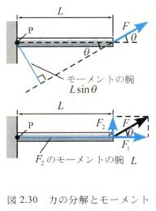
(3.1) は外積 (2.4) そのものである。P から着力点へのベクトル $\boldsymbol r$（長さ $L$）と $\boldsymbol F$ のなす角が $\theta$ なので、$\boldsymbol r\times\boldsymbol F=LF\sin\theta$。モーメントは外積で書ける： $$M=\boldsymbol r\times\boldsymbol F\qquad(\boldsymbol r:\ \text{基準点}\to\text{着力点})\qquad(3.2)$$ 符号も合っている。$\boldsymbol F$ が $\boldsymbol r$ から見て反時計回り側を向くとき、物体は P のまわりに反時計回りに回る。
図2.30 下のように、$\boldsymbol F$ を棒に沿う分力 $\boldsymbol F_1$ と、棒に垂直な分力 $\boldsymbol F_2$ に分ける。2つの分力が P まわりに与える合モーメント $M'$ を計算する。
STEP 1 $\boldsymbol F_1$ は棒に沿うので作用線が P を通り、腕 0：$F_1\cdot0$。
STEP 2 $\boldsymbol F_2$ は棒に垂直なので腕は $L$：$F_2L$。よって $M'=F_1\cdot0+F_2L=F_2L$。
STEP 3 直角三角形から $F_2=F\sin\theta$。$M'=F_2L=FL\sin\theta$。
STEP 4 (3.1) と比べて $M'=M$。
□
つまり（点 P まわりに与える）力 $\boldsymbol F$ のモーメント＝分力 $\boldsymbol F_1,\boldsymbol F_2$ のモーメント（の和）。これは分け方が「棒に沿う・垂直」という特別な場合の確かめである。どんな分け方でも成り立つことを、次に外積で示す。
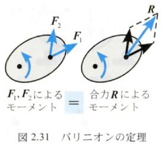
STEP 1 どの力も同じ点に働くので、どの力のモーメントも同じ $\boldsymbol r$ を使って (3.2) で書ける：$M_i=\boldsymbol r\times\boldsymbol F_i$。
STEP 2 外積の分配法則 (2.5)(iii) を $n-1$ 回使う：$\boldsymbol r\times\boldsymbol F_1+\boldsymbol r\times\boldsymbol F_2=\boldsymbol r\times(\boldsymbol F_1+\boldsymbol F_2)$、これに $\boldsymbol r\times\boldsymbol F_3$ を足して $\boldsymbol r\times(\boldsymbol F_1+\boldsymbol F_2+\boldsymbol F_3)$、… と続ける。
STEP 3 右辺は合力 $\boldsymbol R=\sum\boldsymbol F_i$（第1回 4章）のモーメント $\boldsymbol r\times\boldsymbol R$。
□
この定理は「合成」と「分解」の両方向に使える。合成：一点に集まる何本かの力は、モーメントを考えるときも合力1本に置き換えてよい。分解：1本の力を好きな分力に分けて、それぞれのモーメントを足してよい。後者がいちばん役に立つ（次節）。
PHOTO 2｜現実
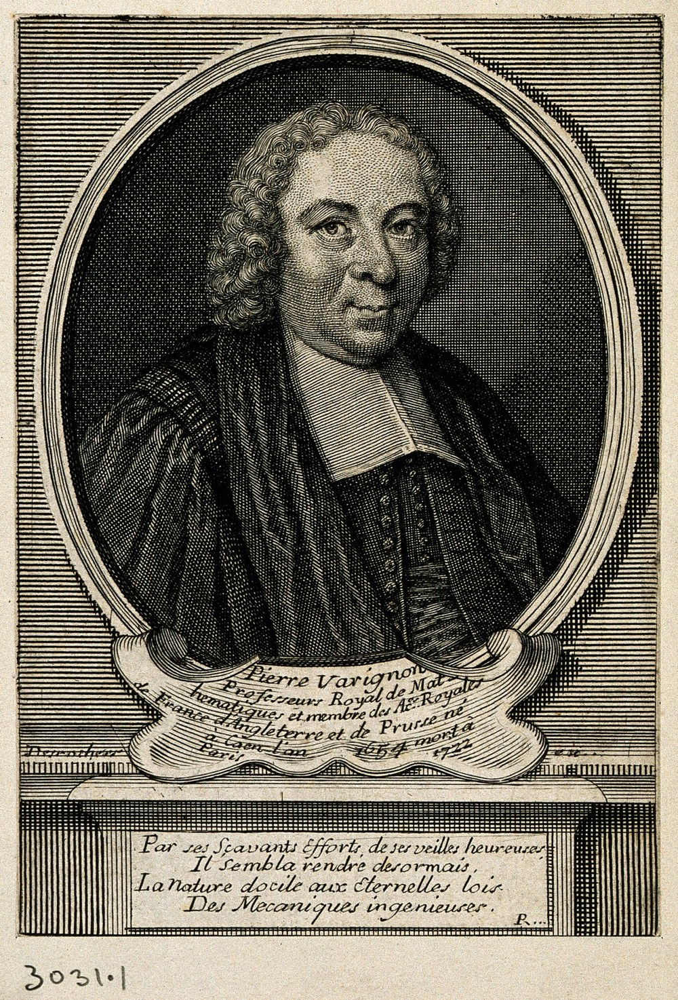
力の平行四辺形から静力学を組み立て直そうとした数学者は、聖職者の襟をつけて描かれている。
E. Desrochers（版刻）／CC BY 4.0（Wellcome Collection）／Wikimedia Commons（ピエール・ヴァリニョン 1654–1722 の肖像、18世紀）
MITATE 2｜見立て
色を小さな点に分けて並べても、離れて見れば一枚の午後の光になる。
Georges Seurat／Public domain／Wikimedia Commons（《グランド・ジャット島の日曜日の午後》1884–86年、シカゴ美術館）
動機：図2.32 のような斜めの力では、$M=FL\sin\theta$ で求めるのは手間である（腕や角を図で探す必要がある）。そこでバリニオンの定理を使い、力を $x$ 成分と $y$ 成分に分ける。
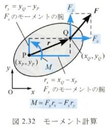
STEP 1（位置を差で書く） 基準点 P$(x_P,y_P)$ から着力点 Q$(x_Q,y_Q)$ へのベクトル（第1回 2.6 節：終点−始点）を $\boldsymbol r=(r_x,\ r_y)$ とおく：$r_x=x_Q-x_P$、$r_y=y_Q-y_P$。
STEP 2（$F_y$ のモーメント） $F_y$ は鉛直な力。作用線は Q を通る鉛直線で、P からの垂線は水平、長さ $|r_x|$。$r_x\gt0$（Q が P の右）で $F_y\gt0$（上向き）なら反時計回り。符号まで込めて $+F_yr_x$（$r_x$ や $F_y$ が負でも、符号の積でそのまま正しい向きになる）。
STEP 3（$F_x$ のモーメント） $F_x$ は水平な力。腕は $|r_y|$。$r_y\gt0$（Q が P の上）で $F_x\gt0$（右向き）なら、上を右へ押すので時計回り。符号まで込めて $-F_xr_y$。
STEP 4（バリニオンの定理で足す） $F_x$ と $F_y$ は同じ点 Q に働く分力なので、(3.3) より $\boldsymbol F$ のモーメントはその和。
□
確かめ：(a) 図2.24（P から右へ $L$、下向き $F$）：$\boldsymbol r=(L,0)$、$\boldsymbol F=(0,-F)$ で $M=(-F)L-0=-FL$（時計回り）。図と一致。(b) 力を作用線に沿って $t$ だけずらすと、$\boldsymbol r$ は $\boldsymbol r+t\boldsymbol u$（$\boldsymbol u$ は $\boldsymbol F$ の向きの単位ベクトル）になる。$(\boldsymbol r+t\boldsymbol u)\times\boldsymbol F=\boldsymbol r\times\boldsymbol F+t\,\boldsymbol u\times\boldsymbol F=\boldsymbol r\times\boldsymbol F$（$\boldsymbol u$ と $\boldsymbol F$ は平行なので (2.5)(ii) で 0）。1.6 節の「同じ作用線なら同じモーメント」が式でも出た。
壁に固定したブラケットの点 O から $x$ に 0.30 m、$y$ に 0.15 m の点 A に、水平から 60° 上向き（右上）に 400 N が働く。O まわりのモーメントを、(1) 成分の式、(2) $M=Fr\sin\theta$、(3) 腕を求めて $M=Fd$、の三通りで求めよ。
解答
① 手順①②：ブラケットを取り出し、O を原点、$x$ 右・$y$ 上。③ $\boldsymbol F=400(\cos60^\circ,\ \sin60^\circ)=(200.0,\ 346.4)\ \mathrm N$、$\boldsymbol r=\overrightarrow{\mathrm{OA}}=(0.30,\ 0.15)\ \mathrm m$。
② (1) (3.4)：$M=F_yr_x-F_xr_y=346.4\times0.30-200.0\times0.15=103.92-30.00=73.92\ \mathrm{N\cdot m}$。
③ (2) $r=\sqrt{0.30^2+0.15^2}=0.3354\ \mathrm m$、$\boldsymbol r$ の角 $\tan^{-1}(0.15/0.30)=26.57^\circ$。$\boldsymbol r$ から $\boldsymbol F$ へ反時計回りに $60^\circ-26.57^\circ=33.43^\circ$。$M=400\times0.3354\times\sin33.43^\circ=73.92\ \mathrm{N\cdot m}$。
④ (3) 腕 $d=M/F=73.92/400=0.1848\ \mathrm m$（図3.3 の青い破線。(2.1) で垂線の足を計算しても同じ長さになる）。
⑤ 答え：73.9 N·m（反時計回り）。確かめ：$F_y$ は O の右で上向き（反時計回り＋103.9）、$F_x$ は O より上で右向き（時計回り −30.0）。成分の式がいちばん速く、角も腕も探さなくてよい。
1.1 節のハンドルの例をもう一度考える。
偶力の合力は $\boldsymbol F+(-\boldsymbol F)=\boldsymbol 0$。並進させる働きはない。それでも回す働きはあるはずである。それを計算する。
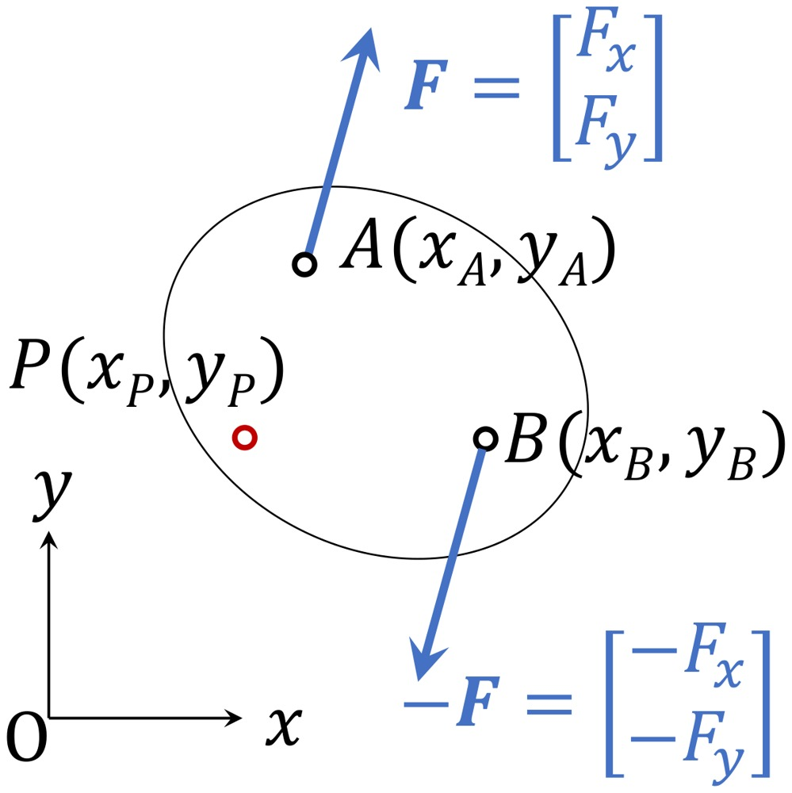
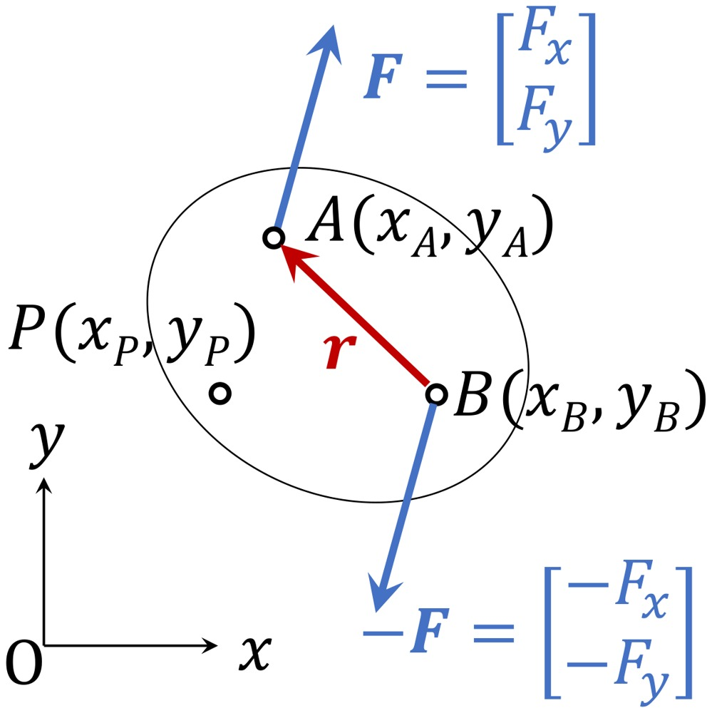
STEP 1（$\boldsymbol F$ のモーメント） (3.4) で、基準点 P から着力点 A へ $\boldsymbol r=(x_A-x_P,\ y_A-y_P)$：$$M_A=F_y(x_A-x_P)-F_x(y_A-y_P)$$
STEP 2（$-\boldsymbol F$ のモーメント） 力の成分は $(-F_x,\ -F_y)$、P から B へ $(x_B-x_P,\ y_B-y_P)$：$$M_B=-F_y(x_B-x_P)+F_x(y_B-y_P)$$
STEP 3（足す） $F_y$ の項をまとめると $F_y\{(x_A-x_P)-(x_B-x_P)\}=F_y(x_A-x_B)$。$x_P$ が消える。$F_x$ の項も同様に $-F_x\{(y_A-y_P)-(y_B-y_P)\}=-F_x(y_A-y_B)$。$$M=M_A+M_B=F_y(x_A-x_B)-F_x(y_A-y_B)\qquad(4.1)$$
STEP 4（読む） $M$ は $x_P,\ y_P$ を含まない。したがって偶力 $\boldsymbol F,-\boldsymbol F$ は、点 P の位置に関係なく同じモーメントを与える。
□
さらに $\overrightarrow{\mathrm{BA}}=\boldsymbol r=(r_x,\ r_y)=(x_A-x_B,\ y_A-y_B)$ とおくと $$M=F_yr_x-F_xr_y=\boldsymbol r\times\boldsymbol F\qquad(4.2)$$ となり、偶力のモーメントは $\boldsymbol F$（力ベクトル）と $\boldsymbol r$（着力点間の位置ベクトル）のみで決まる。(2.4) を使えば、大きさは「力の大きさ $F$ × 2本の作用線の間の距離 $d$」：$|M|=Fd$。向きは、2つの力が回そうとする向き。
直径 0.38 m のハンドルの右端 B(0.19, 0) m を上向き 30 N、左端 A(−0.19, 0) m を下向き 30 N で押す。中心 O、点 B、ハンドルの外の点 Q(0.50, 0.30) m のまわりのモーメントをそれぞれ求めよ。
解答
① O まわり：B の力 $(0,30)$、$\boldsymbol r=(0.19,0)$ で $30\times0.19=5.70$。A の力 $(0,-30)$、$\boldsymbol r=(-0.19,0)$ で $(-30)\times(-0.19)=5.70$。合計 $11.40\ \mathrm{N\cdot m}$。
② B まわり：B の力は腕 0。A の力：$\boldsymbol r=(-0.38,0)$、$(-30)\times(-0.38)=11.40$。合計 $11.40$。
③ Q まわり：B の力：$\boldsymbol r=(0.19-0.50,\ 0-0.30)=(-0.31,-0.30)$、$M=30\times(-0.31)-0\times(-0.30)=-9.30$。A の力：$\boldsymbol r=(-0.69,-0.30)$、$M=(-30)\times(-0.69)-0=+20.70$。合計 $11.40$。
④ (4.2) で直接：$\boldsymbol F=(0,30)$ の着力点を B、$-\boldsymbol F$ の着力点を A として $\boldsymbol r=\overrightarrow{\mathrm{AB}}=(0.38,0)$、$M=30\times0.38=11.40$。$|M|=Fd=30\times0.38$ とも一致。答え：どの点まわりでも 11.4 N·m（反時計回り）。
純粋モーメントには次の性質がある（講義資料 2・2・3）。
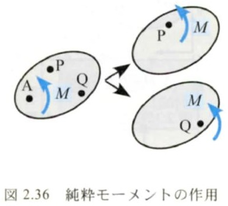
PHOTO 3｜現実
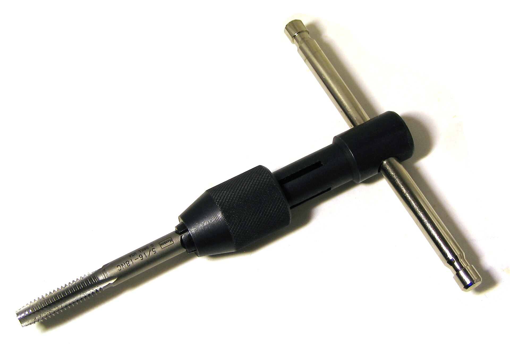
ねじを切るときは、横棒の両端を逆向きに押す。片手で一端だけを押すと、タップは斜めに折れやすい。
Omegatron／CC BY-SA 3.0／Wikimedia Commons（タップと T 型ハンドル、2007年）
MITATE 3｜見立て
群衆はどこへも移らないまま、黒い立方体のまわりを反時計回りに巡り続ける。
Adli Wahid（Basile Morin による修正）／CC BY-SA 4.0／Wikimedia Commons（ハッジのカアバ、2018年）
※タップの注意は、一端だけを押すと偶力ではなく「力1本」になり、タップに横向きの力（曲げ）がかかるため（4.3 節：偶力は回す働きだけを与える）（本教材の解釈）。
力は作用線上なら動かしてよい（1.6 節）。では、作用線から外れた点 P へ移したいときはどうするか。マニピュレータでいえば、腕の先の荷物が「関節 $J_2$ に何をしているか」を知りたい場面である。講義資料 2・2・4 の考え方は次の4ステップ（教科書 図2.37）。
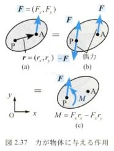
$M$ は「A の力の、P まわりのモーメント」そのものである。だから覚え方は「力はそのまま持っていき、置いていく働き（P まわりのモーメント）を純粋モーメントとして添える」。
確かめ：A が P を通る作用線上にあれば、$\boldsymbol r$ と $\boldsymbol F$ が平行なので $M=0$。力を作用線上で移動させても、物体に与える作用（力、モーメント）は不変（講義資料 p.17 の結び）。1.6 節・3.4 節と一致する。
点 A(2, 1) m に $\boldsymbol F=(30,\ 40)$ N が働く。これと等価な、原点 O に働く力と純粋モーメントを求めよ。
解答
① 力はそのまま：O に $\boldsymbol F=(30,\ 40)$ N。
② (5.1)：$\boldsymbol r=\overrightarrow{\mathrm{OA}}=(2,\ 1)$、$M=F_yr_x-F_xr_y=40\times2-30\times1=50\ \mathrm{N\cdot m}$。
③ 答え：O に $(30,\ 40)$ N と、50 N·m（反時計回り）の純粋モーメント。
④ 確かめ：別の点、たとえば Q(1, 0) まわりで両者を比べる。元の系：$\overrightarrow{\mathrm{QA}}=(1,1)$、$40\times1-30\times1=10$。新しい系：O の力の Q まわり $\overrightarrow{\mathrm{QO}}=(-1,0)$ で $40\times(-1)-0=-40$、純粋モーメント $+50$ を足して $10$。一致（等価の確かめ。5.5 節で一般に示す）。
物体上の $n$ 個の点に力 $\boldsymbol F_1,\boldsymbol F_2,\cdots,\boldsymbol F_n$、$m$ 個の点に純粋モーメント $M_1,M_2,\cdots,M_m$ が作用するとき、点 P に与える力 $\boldsymbol F$ とモーメント $M$ は？ 同様の操作を力ごとに行えばよい（教科書 図2.41）。
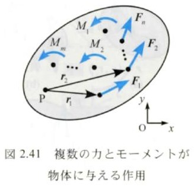
STEP 1 各力 $\boldsymbol F_i$ を (5.1) で P へ移す：P に $\boldsymbol F_i$ と、純粋モーメント $F_{iy}r_{ix}-F_{ix}r_{iy}$（$\boldsymbol r_i=$ P → $\boldsymbol F_i$ の着力点）。
STEP 2 P に集まった $n$ 本の力は一点に働くので、ベクトルとして足して1本にできる（第1回 4章）。
STEP 3 純粋モーメントはどこに描いても同じ（4.4 節）なので、もとからある $M_j$ も P に集めてよい。すべての純粋モーメントを符号つきで足す。
□
どんなに複雑な力のかかり方でも、平面の剛体に対する働きは「1点の力1本＋純粋モーメント1つ」にまとめられる。第4回の釣合い条件は、これが両方 0 になること（$\boldsymbol F=\boldsymbol 0$、$M=0$）である。
点 P に集めた $(\boldsymbol F,\ M_P)$ を、別の点 Q に集め直したいときは、最初からやり直す必要はない。
STEP 1 Q から各着力点へのベクトルは「Q → P → 着力点」と回り道して $\overrightarrow{\mathrm{QP}}+\boldsymbol r_i$ と書ける（ベクトルのつなぎ、第1回 2.2 節）。
STEP 2 (5.3) を Q について書き、分配法則 (2.5)(iii) で分ける：$M_Q=\sum_i(\overrightarrow{\mathrm{QP}}+\boldsymbol r_i)\times\boldsymbol F_i+\sum_jM_j=\sum_i\overrightarrow{\mathrm{QP}}\times\boldsymbol F_i+\Big(\sum_i\boldsymbol r_i\times\boldsymbol F_i+\sum_jM_j\Big)$。
STEP 3 第1項は分配法則でまとめて $\overrightarrow{\mathrm{QP}}\times\sum_i\boldsymbol F_i=\overrightarrow{\mathrm{QP}}\times\boldsymbol F$。かっこの中は (5.3) の $M_P$。
□
これが講義資料の例題2・6（6.3 節）の考え方である。純粋モーメントは移しても変わらず、力だけが新しい位置で「置いていく働き」を生む。
(5.1) を逆に読むと、「P に力 $\boldsymbol F$（$\neq\boldsymbol 0$）と純粋モーメント $M$」は、作用線をずらした1本の力 $\boldsymbol F$ に置き換えられる。ずらす距離は $|M|=Fd$ から $$d=\frac{|M|}{F}\qquad(5.5)$$ ずらす向きは、ずらした力が P のまわりに $M$ と同じ向きのモーメントを生む側である。
原点 O に下向きの力 $(0,\ -200)$ N と、反時計回り 60 N·m の純粋モーメントが働く。これと等価な1本の力を求め、その作用線が $x$ 軸と交わる点を答えよ。
解答
① 力は同じ $(0,\ -200)$ N。$x$ 軸上の点 $(x,\ 0)$ に置くとして、その O まわりのモーメントが $+60$ になればよい。
② (3.4)：$M=F_yr_x-F_xr_y=(-200)\,x-0=60$ より $x=-0.300\ \mathrm m$。
③ 答え：$x=-0.300$ m（O の左 0.300 m）を通る鉛直な下向き 200 N。
④ 確かめ：(5.5) $d=60/200=0.300$ m。下向きの力を O の左に置くと、左側を下げる＝反時計回りで、与えられた $M$ の向きと合う。
PHOTO 4｜現実
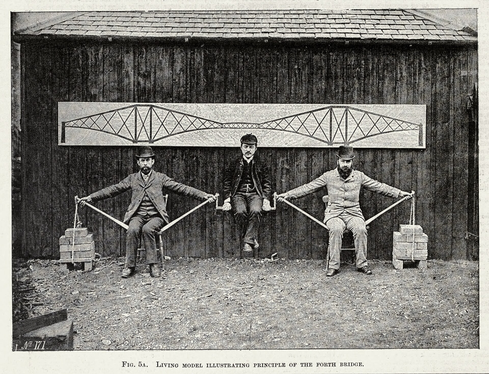
中央の一人の重さは、両脇の男たちの肩に「力」と「ひねり」として運ばれ、外の煉瓦がひねりのほうを打ち消している。
撮影者不詳／Public domain／Wikimedia Commons（フォース橋の片持ち梁の原理を示す人間模型。中央は渡邊嘉一とされる。19世紀末、Commons の記載では 1882〜1904年の間）
MITATE 4｜見立て
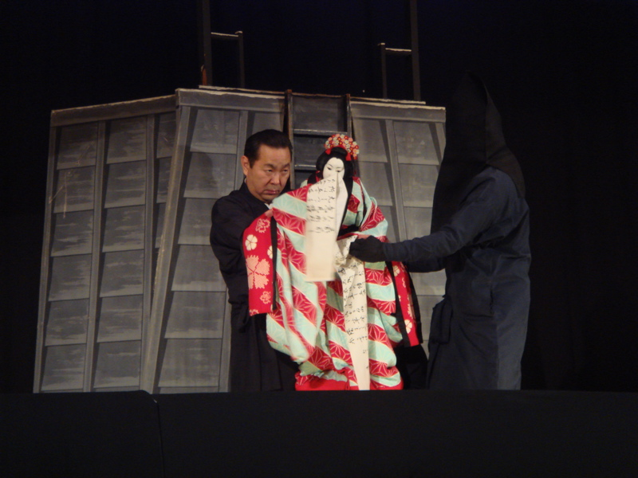
人形の体は遣い手の胸から離れて浮いている。その重さとひねりを、着物の奥の一本の手首が引き受けている。
Morgan Calliope／CC BY 2.0／Wikimedia Commons（文楽、京都・ギオンコーナー、2006年）
① 系を切り出す：どの物体に働く力・モーメントを考えるかを決め、自由物体図を描く。
② 座標軸と基準点を決める：$x$ 右・$y$ 上、反時計回り＋。モーメントを「どの点まわり」で考えるかを書く。
③ 力を成分で書き、位置ベクトルを作る：$\boldsymbol F=(F_x,F_y)$、$\boldsymbol r=$ 基準点 → 着力点（終点−始点）。
④ 式を立てる：$M=F_yr_x-F_xr_y$（式2.30′）。複数なら符号つきで足す（式2.41）。力を移すなら (5.1)、基準点を移すなら (5.4)。
⑤ 計算する。
⑥ 確かめる：符号を図で確かめる（「右で上向き＝反時計回り」など）、単位は N·m、有効数字は3〜4桁。できれば別の方法（$FL\sin\theta$ や別の基準点）で検算する。
点 A に作用する力による、点 B、点 C まわりのモーメントを求めよ。点の座標は A(−0.141, 0.141) m、B(0.2, 0) m、C(0, −0.28) m。力ベクトルは $\boldsymbol F=\begin{bmatrix}-100\cos30^\circ\\100\sin30^\circ\end{bmatrix}=\begin{bmatrix}-86.6\\50\end{bmatrix}$ N。
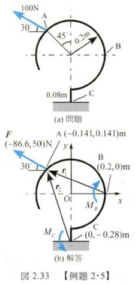
方針：基準点（点 B と C）から着力点 A への位置ベクトル $\boldsymbol r_i=\begin{bmatrix}r_{ix}\\r_{iy}\end{bmatrix}$ を求め、式 (2.30′) に代入して解く。
解答
① 系：A を含む部材。② 原点は円弧の中心、$x$ 右・$y$ 上、反時計回り＋。基準点は B と C。
③ $\boldsymbol r_1=\overrightarrow{\mathrm{BA}}=(x_A-x_B,\ y_A-y_B)=(-0.141-0.2,\ 0.141-0)$、$\boldsymbol r_2=\overrightarrow{\mathrm{CA}}=(-0.141-0,\ 0.141-(-0.28))$。
④⑤ $M_B=F_yr_{1x}-F_xr_{1y}=50.0\cdot(-0.141-0.2)-(-86.6)\cdot(0.141-0)=-4.825\ \mathrm{Nm}$
$M_C=F_yr_{2x}-F_xr_{2y}=50.0\cdot(-0.141-0)-(-86.6)\cdot\big(0.141-(-0.28)\big)=29.42\ \mathrm{Nm}$
⑥ 答え：点 B まわり 4.825 Nm（cw）、点 C まわり 29.42 Nm（ccw）。符号の確かめ（成分ごとに）：B まわりでは、$F_y$（上向き 50）は B の左にあるので時計回り（$50.0\times(-0.3414)=-17.07$）、$F_x$（左向き 86.6）は B より上にあるので反時計回り（$+86.6\times0.1414=+12.25$）。わずかに時計回りが勝って $-4.82$。C まわりでは、A は C よりずっと上（0.4214 m）にあるので、左向きの $F_x$ の反時計回り（$+36.49$）が $F_y$ の時計回り（$-7.07$）に大きく勝つ。
例題2・5 において、点 B への作用から、点 C への作用を求めよ。
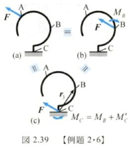
方針：図2.39 (a)（点 A に力 $\boldsymbol F$ が作用）と等価な状態を点 B で考える → 図 (b)。図 (b) の状態を出発点にして、点 C への作用を求める（5.4 節の式 (5.4)）。
解答
① 点 B への作用（5.2 節）：力 $\boldsymbol F=\begin{bmatrix}-86.6&50\end{bmatrix}^T$ N、モーメント $M_B=4.825$ Nm（cw）← 例題2・5 の結果より。ただし、$M_B$ は純粋モーメントであることに注意（もう「A の力のモーメント」ではなく、B に置かれた独立の回す働き）。
② 点 C への作用：力は $\boldsymbol F=\begin{bmatrix}-86.6&50\end{bmatrix}^T$ N（同じ）。モーメントは $M_C=M_B+M_C'$。$M_B=-4.825$ Nm は純粋モーメントなので C へ移しても変わらない。$M_C'$ は点 B に作用する $\boldsymbol F$ による C まわりのモーメント。
③ $\overrightarrow{\mathrm{CB}}=\boldsymbol r_3=(r_{3x},\ r_{3y})=(0.2-0,\ 0-(-0.28))=(0.2,\ 0.28)$ m より
$M_C'=F_yr_{3x}-F_xr_{3y}=50.0\cdot0.2-(-86.6)\cdot0.28=10.00+24.25=34.25$ Nm
④ $M_C=M_B+M_C'=-4.825+34.25=29.43\approx29.4$ Nm（ccw）。
⑤ 確かめ：例題2・5 で直接求めた 29.42 Nm と一致する（最後の桁の 1 の違いは、$M_C'$ を 4 桁に丸めて足したため）。これは (5.4) $M_C=M_B+\overrightarrow{\mathrm{CB}}\times\boldsymbol F$ の数値例である。
序の図で、関節 $J_2$ のアクチュエータ（モータ）が発生しているトルクと、関節 $J_2$ に作用している力を求めよ。リンクの重さは無視する。
解答
① 系：$J_2$ より先の腕（リンク $L_2$・$L_3$・$L_4$）と荷物をまとめて切り出す。外から働くのは、荷物の重さ 100 N と、関節 $J_2$ から受ける力・トルクだけ。
② 座標：$J_2$ を原点、$x$ 右・$y$ 上、反時計回り＋。基準点は $J_2$。
③ 重さ $\boldsymbol W=(0,\ -100)$ N。着力点（荷物の重心）は $J_2$ から右へ $L_2+L_3$、下へ $L_4$ とその先：$\boldsymbol r=(L_2+L_3,\ r_y)$（$r_y$ は負。値は次の④で不要になる）。
④ (5.1) で重さを $J_2$ へ移す：$J_2$ に力 $(0,\ -100)$ N と純粋モーメント $M=W_yr_x-W_xr_y=(-100)(L_2+L_3)-0\cdot r_y=-100(L_2+L_3)$。$W_x=0$ なので $r_y$（吊り下げの長さ $L_4$）は答えに入らない（重さの作用線は鉛直で、$L_4$ はその作用線に沿った長さだから。1.6 節）。
⑤ つまり荷物は、関節 $J_2$ に「下向き 100 N」と「時計回り $100(L_2+L_3)$」を及ぼす。腕を止めておくには、関節がこれと逆の働きを腕に与えなければならない：
・関節 $J_2$ に作用している力：腕は関節（軸受）から上向き 100 N を受け、作用・反作用で関節は腕から下向き 100 N を受ける。
・アクチュエータのトルク：反時計回り $T=100(L_2+L_3)$ N·m。（「逆向きを与えれば止まる」ことは、第4回の釣合いで正式に扱う。）
⑥ 数値の例：講義資料の例題の図には長さの数値がない。第1回の仕様表（リンク2：関節2→関節3 が 0.3 m、リンク3：関節3→グリッパが 0.2 m）を $L_2,\ L_3$ と読むと（対応は本教材の推定）、$T=100\times(0.3+0.2)=50.0$ N·m。単位：N × m = N·m。
長さ 0.40 m のスパナの先を、柄と 75° をなす向きに 25 N で押す。ボルトまわりのモーメントの大きさを求めよ。柄に直角に押すときと比べよ。
解答
① (3.1)：$M=FL\sin\theta=25\times0.40\times\sin75^\circ=25\times0.40\times0.9659=9.659\ \mathrm{N\cdot m}$。
② 直角なら $25\times0.40=10.00$ N·m。75° でも約 3.4% しか減らない（図3.1：90° 付近の $\sin$ は平ら）。
折れ曲がった柱 ABC は A で地面に固定されている。C に加えた 400 N の力が点 A のまわりに生むモーメントの大きさと向きを求めよ。（AB は鉛直で 5.5 m、BC は 3 m で $\angle\mathrm{ABC}=120^\circ$、力は C で水平から 50° 下向き、右下。）
原文：The bent column ABC is firmly fixed to the ground at A. Determine the magnitude and direction of the moment about point A produced by the 400 N force applied at C.
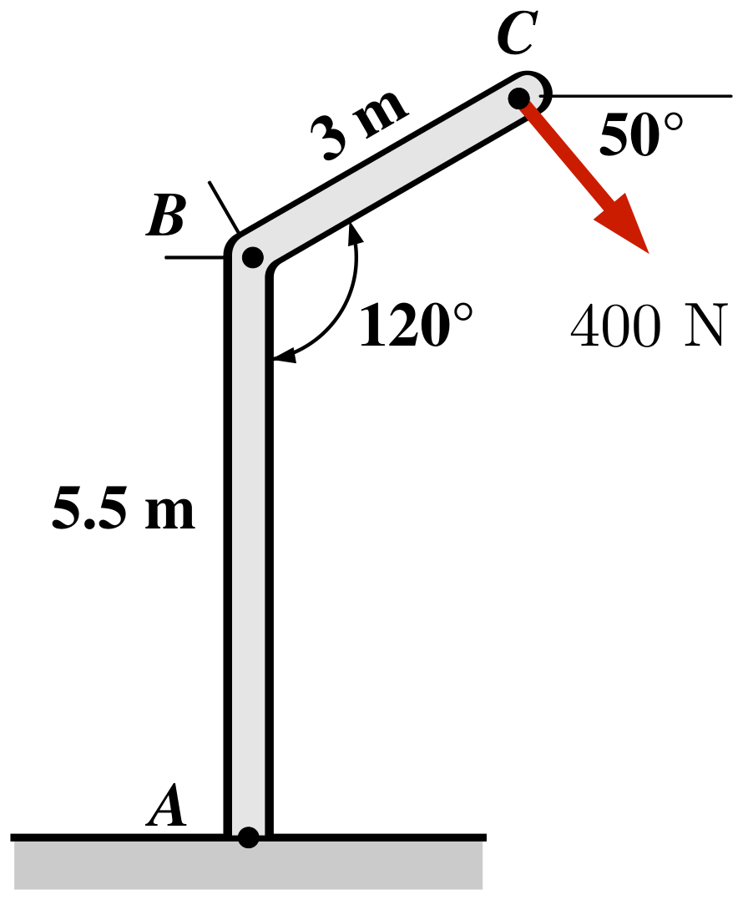
出典：T. Baker & D. Haynes, Engineering Statics: Open and Interactive, §4.1 Moment of Force, Example 4.1.3（CC BY-NC-SA 4.0）https://engineeringstatics.org/moment-of-force.html。和訳は本教材。公式解答（2596 N·m、時計回り）と照合済み。
解答
① ② A を原点、$x$ 右・$y$ 上。③ B$=(0,\ 5.5)$。$\angle\mathrm{ABC}=120^\circ$ で AB が鉛直なので、BC は水平から 30° 上がって右へ：C$=(3\cos30^\circ,\ 5.5+3\sin30^\circ)=(2.598,\ 7.000)$ m。$\boldsymbol F=400(\cos50^\circ,\ -\sin50^\circ)=(257.1,\ -306.4)$ N。
④⑤ (3.4)：$M_A=F_yr_x-F_xr_y=(-306.4)(2.598)-(257.1)(7.000)=-796.1-1799.8=-2596\ \mathrm{N\cdot m}$。
⑥ 答え：2596 N·m（時計回り）。どちらの成分も時計回り（右下へ押す力が A の右上にある）。公式解答は余弦定理・正弦定理で腕 $d_\perp=6.49$ m を出して $400\times6.49$ としている。成分の式なら三角形を解かずに済む（腕は $|M|/F=6.490$ m で一致）。
図のフレームに 750 lb の力が加わる。力を水平・鉛直成分に分解し、バリニオンの定理を使って点 A まわりのモーメントを求めよ。（A は柱の根元、柱の高さ 2 ft、梁は右へ 3 ft で、先端 B に、鉛直から 60° 傾いた右上向きの力。）
原文：A 750 lb force is applied to the frame as shown. Determine the moment this force makes about point A by resolving the force into horizontal and vertical components and applying Varignon's Theorem.
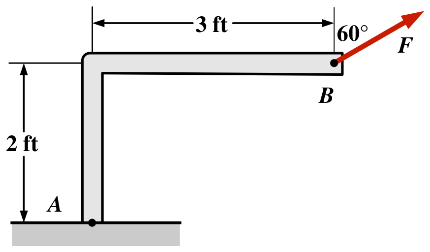
出典：Baker & Haynes, Engineering Statics, §4.3 Varignon's Theorem, Example 4.3.4（CC BY-NC-SA 4.0）https://engineeringstatics.org/varignons-theorem.html。和訳は本教材。公式解答（174 ft·lb、時計回り）と照合済み。
解答
① A 原点、$\boldsymbol r=\overrightarrow{\mathrm{AB}}=(3,\ 2)$ ft。鉛直から 60° ＝水平から 30° なので $\boldsymbol F=750(\cos30^\circ,\ \sin30^\circ)=(649.5,\ 375.0)$ lb。
② $F_y$ の寄与：$+375.0\times3=+1125$（A の右で上向き＝反時計回り）。$F_x$ の寄与：$-649.5\times2=-1299$（A より上で右向き＝時計回り）。
③ バリニオンの定理で和：$M_A=1125-1299=-174$ ft·lb。答え：174 ft·lb（時計回り）。
④ ポイント：2つの成分が逆向きで、ほとんど打ち消し合う。符号を落とすと 2424 ft·lb という全く違う答えになる。単位は lb（ポンド重）と ft（フィート）で、単位の変換は不要（答えも ft·lb）。
図の3つの荷重のうち、静的に等価（statically equivalent）なのはどれか。（高さ 12 ft の板。(a) 右辺の高さ 6 ft に左向き 10 lb、下辺の中央に時計回り 80 ft·lb。(b) 左辺の高さ 6 ft に右向き 10 lb、右上の角に左向き 20 lb、下辺の中央に時計回り 120 ft·lb。(c) 上辺の中央に反時計回り 20 ft·lb、下辺の中央に時計回り 40 ft·lb、右下の角に左向き 10 lb。）
原文：Which of the three loading systems shown are statically equivalent?
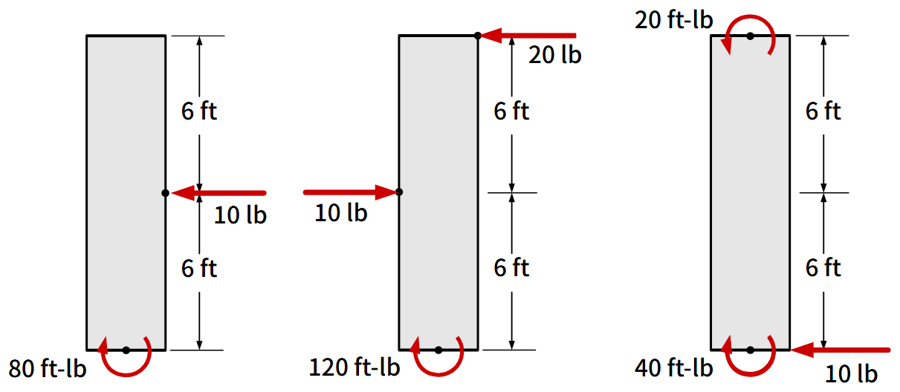
出典：Baker & Haynes, Engineering Statics, §4.7 Statically Equivalent Systems, Example 4.7.7（CC BY-NC-SA 4.0）https://engineeringstatics.org/statically-equivalent-systems.html。和訳は本教材。公式解答（(a) と (c)）と照合済み。
解答
① 判定法：5.3 節より、平面の荷重は「1点の力＋純粋モーメント」にまとまる。2つの系が等価 ⇔ 合力が同じ、かつ同じ1点まわりの合モーメントが同じ（5.4 節より、1点で同じなら (5.4) によって他のどの点でも同じになる）。
② 合力：(a) $(-10,\ 0)$、(b) $(10-20,\ 0)=(-10,\ 0)$、(c) $(-10,\ 0)$。3つとも同じなので、モーメントで決まる。
③ 下辺の中央 A を基準に（板の幅は、水平な力のモーメントに効かないので不要。$F_y=0$ だから $M=-F_xr_y$）：
(a) $-80+\{-(-10)\times6\}=-80+60=-20$ ft·lb
(b) $-120+\{-(10)\times6\}+\{-(-20)\times12\}=-120-60+240=+60$ ft·lb
(c) $+20-40+\{-(-10)\times0\}=-20$ ft·lb（純粋モーメントはどこに描いてあってもそのまま足す。4.4 節）
④ 答え：(a) と (c) が等価（どちらも左向き 10 lb と、A まわり 20 ft·lb 時計回り）。(b) は合力は同じだがモーメントが違う。
⑤ 確かめ：上辺の中央を基準にすると (a) $-140$、(b) $-60$、(c) $-140$ で、判定は変わらない（(5.4)）。
出典：本教材の自作。
① 作用線は鉛直線で、O からの垂線は水平の 0.35 m。O の右で下向き＝時計回り。$M=-80\times0.35=-28.0\ \mathrm{N\cdot m}$。
② 成分の式でも：$\boldsymbol r=(0.35,\ 0)$、$\boldsymbol F=(0,\ -80)$、$M=(-80)(0.35)-0=-28.0$。
③ 同じ鉛直線上に移すと $\boldsymbol r=(0.35,\ 0.20)$。$M=(-80)(0.35)-0\times0.20=-28.0$ で変わらない（同じ作用線。1.6 節）。
出典：本教材の自作。
① (3.4)：$M=F_yr_x-F_xr_y=(-30)(-0.2)-(40)(0.5)=6.0-20.0=-14.0\ \mathrm{N\cdot m}$。
② 答え：14.0 N·m（時計回り）。確かめ：$F_y$（下向き）は基準点の左にあるので反時計回り（＋6.0）、$F_x$（右向き）は基準点より上にあるので時計回り（−20.0）。
出典：本教材の自作。
① (4.2)：$|M|=Fd=15\times0.24=3.60\ \mathrm{N\cdot m}$。
② 偶力のモーメントは基準点を含まない (4.1) ので、どの点まわりでも 3.60 N·m（向きも同じ）。
原文：Calculate the torque about the z-axis that is out of the page at the origin in the following figure, given that F1 = 3 N, F2 = 2 N, F3 = 3 N, F4 = 1.8 N.
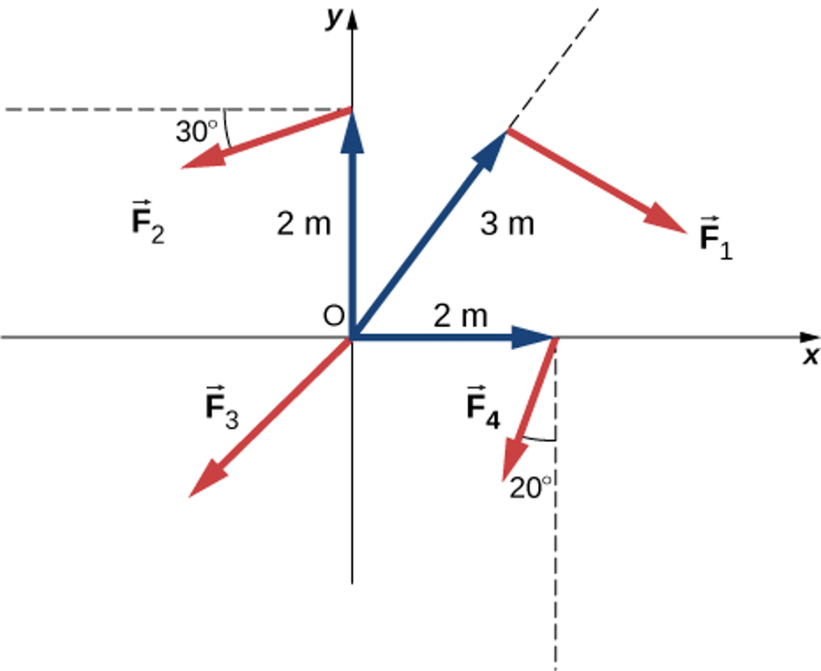
出典：OpenStax, University Physics Volume 1, Chapter 10 Problems, §10.6, Problem 77（CC BY-NC-SA 4.0）https://openstax.org/books/university-physics-volume-1/pages/10-problems。和訳と（ ）内の図の読み取りは本教材。公式解答（−8.92 N·m）と照合済み。「$F_1$ が位置ベクトルに垂直」は図から読み取った前提。
① 「$z$ 軸まわりのトルク」は、この平面での反時計回り＋のモーメントのこと（第3回で詳しく）。
② $F_1$：位置ベクトルに垂直なので腕 3 m、右下向き＝時計回り：$-3\times3=-9.0$。
③ $F_2=2(\cos210^\circ,\ \sin210^\circ)=(-1.732,\ -1.000)$、$\boldsymbol r=(0,\ 2)$：$M_2=(-1.000)(0)-(-1.732)(2)=+3.464$。
④ $F_3$：原点に働くので 0。
⑤ $F_4=1.8(\cos250^\circ,\ \sin250^\circ)=(-0.6156,\ -1.691)$、$\boldsymbol r=(2,\ 0)$：$M_4=(-1.691)(2)-0=-3.383$。
⑥ 合計：$-9.0+3.464+0-3.383=-8.92$ N·m（時計回り 8.92 N·m）。
原文：A mobile crane is used to raise a 500 lb load of building materials. Boom AC is 40 ft long and the tension of the boom pendant AB is 1500 lb. Use the definition of the moment to determine the magnitude and direction of: M1, the moment about point C caused by the load, W. M2, the moment about point C caused by tension T.
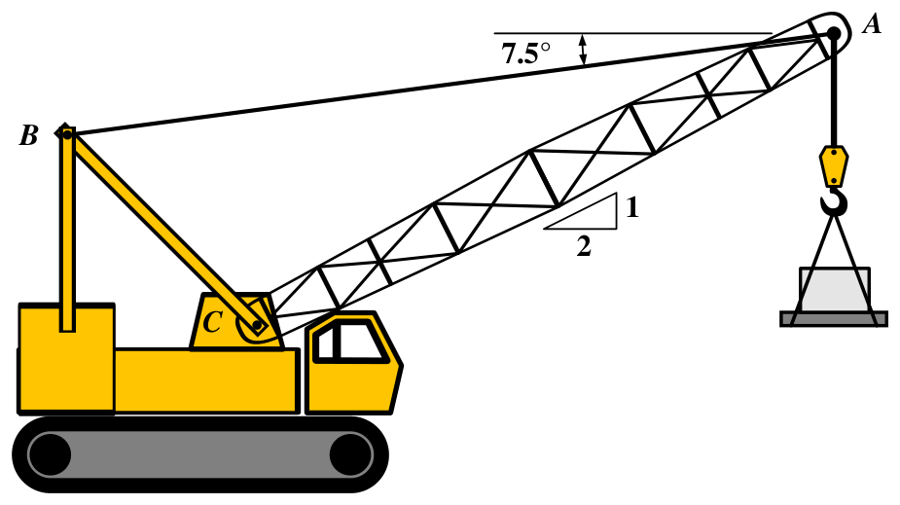
出典：Baker & Haynes, Engineering Statics, §4.1, Example 4.1.2（CC BY-NC-SA 4.0）https://engineeringstatics.org/moment-of-force.html。和訳は本教材。公式解答（$M_1$＝17,885 ft·lb 時計回り、$M_2$＝19,590 ft·lb 反時計回り）と、途中の丸めの範囲で一致（下の解答は丸めずに計算した値）。
① C 原点。傾き 1:2 の単位ベクトルは $(2,\ 1)/\sqrt5$。A$=40(2,\ 1)/\sqrt5=(35.78,\ 17.89)$ ft。
② (1) $\boldsymbol W=(0,\ -500)$：$M_1=(-500)(35.78)-0=-1.789\times10^4$ ft·lb（時計回り。腕は水平距離 35.78 ft）。
③ (2) $\boldsymbol T=1500(\cos187.5^\circ,\ \sin187.5^\circ)=(-1487.2,\ -195.8)$ lb。$M_2=(-195.8)(35.78)-(-1487.2)(17.89)=-7005+26606=+1.960\times10^4$ ft·lb（反時計回り）。
④ 確かめ：腕 $|M_2|/T=13.07$ ft（公式解答の $d_2=13.06$ ft と一致）。公式解答の 17,885・19,590 との差は、途中の値を丸めたため。定義（腕を図で探す）と成分の式の両方で解けるようにしておくとよい。
原文：Two forces act on a bracket as shown. Replace these forces with an equivalent force-couple system acting at point B.
出典：Baker & Haynes, Engineering Statics, §4.8 Exercises (Ch. 4), “Equivalent Force-couple system: Bracket”（CC BY-NC-SA 4.0）https://engineeringstatics.org/Chapter_04-10.html。和訳と（ ）内の幾何の書き起こしは本教材。数値は一例（原問題は開くたびに数値が変わる）。自作の解答（出典の採点式で照合）。
① 力の和 (5.2)：$\boldsymbol F_A=93(\cos(-54^\circ),\ \sin(-54^\circ))=(54.66,\ -75.24)$、$\boldsymbol F_D=(0,\ -89)$。$\boldsymbol R=(54.66,\ -164.24)$ lb、大きさ 173.1 lb、$+x$ 軸から 71.6° 下向き。
② B まわり (5.3)：A の力 $\boldsymbol r=(4,\ -5)$：$(-75.24)(4)-(54.66)(-5)=-300.96+273.32=-27.6$。D の力 $\boldsymbol r=(0,\ -5)$：$(-89)(0)-0=0$（作用線が B を通る）。
③ 答え：B に $\boldsymbol R=(54.7,\ -164.2)$ lb と、27.6 in·lb（時計回り）の偶力。
原文：Determine angle α knowing that the triangular plate is in equilibrium when subjected to the three couples shown.
出典：Baker & Haynes, Engineering Statics, §4.8 Exercises (Ch. 4), “Couples in equilibrium”（CC BY-NC-SA 4.0）https://engineeringstatics.org/Chapter_04-10.html。和訳と図の描き直しは本教材。数値は一例。自作の解答（出典の解説「$d$ は約分で消える」と照合）。
① 各偶力のモーメント（4.2 節、$|M|=Fd$ と向き）：偶力1 は腕 CB$=d\cos\alpha$、C で上・B で下＝時計回り：$-1.95\,d\cos\alpha$。偶力2 は腕 AB$=d\sin\alpha$、下の B で右・上の A で左＝反時計回り：$+6.75\,d\sin\alpha$。偶力3 は腕 $d$、時計回り：$-2.49\,d$。
② 釣り合う（偶力だけなので、合モーメントが 0）：$6.75\,d\sin\alpha-1.95\,d\cos\alpha-2.49\,d=0$。$d$ で割ると $6.75\sin\alpha-1.95\cos\alpha=2.49$。板の大きさ $d$ は答えに関係しない。
③ 三角関数の合成：$6.75\sin\alpha-1.95\cos\alpha=R\sin(\alpha-\beta)$、$R=\sqrt{6.75^2+1.95^2}=7.026$、$\tan\beta=1.95/6.75$ で $\beta=16.11^\circ$。
（合成の出所：$R\sin(\alpha-\beta)=R\sin\alpha\cos\beta-R\cos\alpha\sin\beta$ と、加法定理 $\sin(\alpha-\beta)=\sin\alpha\cos\beta-\cos\alpha\sin\beta$ で展開して係数を比べると、$R\cos\beta=6.75$、$R\sin\beta=1.95$。この加法定理は、第1回 問7 の解答で内積から作った $\cos(x-y)=\cos x\cos y+\sin x\sin y$ に $x=90^\circ-\alpha$、$y=-\beta$ を入れると出る：$\sin(\alpha-\beta)=\cos(90^\circ-\alpha+\beta)=\cos(90^\circ-\alpha)\cos(-\beta)+\sin(90^\circ-\alpha)\sin(-\beta)=\sin\alpha\cos\beta-\cos\alpha\sin\beta$。）
④ $\sin(\alpha-16.11^\circ)=2.49/7.026=0.3544$、$\alpha-16.11^\circ=20.76^\circ$、$\alpha=36.87^\circ$（もう一つの解 $\alpha-16.11^\circ=159.24^\circ$ は三角形の角として不適）。
⑤ 確かめ：$\sin36.87^\circ=0.600$、$\cos36.87^\circ=0.800$（3-4-5 の三角形）で $6.75\times0.6-1.95\times0.8=4.05-1.56=2.49$。
原文：(1) Replace the three forces acting tangent to a circle with an equivalent force-couple system acting at the center O, i.e. with a single force R and moment M. (2) Replace the force-couple system acting at the origin with a single force which has the same effect. Specify the magnitude and direction of the resultant force and the coordinate x_A of the point on the x-axis through which the line of action of this force passes.
出典：Baker & Haynes, Engineering Statics, §4.8 Exercises (Ch. 4), “Equivalent force-couple system: Circle” と “Resultant of a force-couple system”（CC BY-NC-SA 4.0）https://engineeringstatics.org/Chapter_04-10.html。和訳・図の描き直し・2問の接続は本教材。数値は一例（半径は本教材で決めた）。自作の解答（出典の採点式で照合）。
① (1) 力の和：$2.5(\cos20^\circ,\ \sin20^\circ)=(2.349,\ 0.855)$、$(0,\ -2)$、$(3,\ 0)$ を足して $\boldsymbol R=(5.349,\ -1.145)$ N。大きさ 5.47 N、$+x$ から 12.08° 下向き。
② O まわり：接線方向の力は半径に垂直なので、腕はどれも $r$。向きだけ見ればよい。2.5 N：110° の点で右上へ＝時計回り $-2.5r$。2 N：左端で下向き＝反時計回り $+2r$。3 N：下端で右向き＝反時計回り $+3r$。$M=(-2.5+2+3)\times0.20=+0.500$ N·m（反時計回り）。
③ (2) 1本の力 $\boldsymbol R$ を $x$ 軸上の点 $(x_A,\ 0)$ に置くと、O まわりのモーメントは $R_yx_A-R_x\cdot0=R_yx_A$。これが $M$ に等しい：$x_A=M/R_y=0.500/(-1.145)=-0.437$ m。
④ 確かめ：O から作用線までの距離 $d=|M|/R=0.500/5.47=0.0914$ m（5.5 節）。$\boldsymbol R$ は右下向きなので、O のまわりに反時計回りを作るには作用線が O の下を通ればよい。実際、作用線は $y$ 軸と $y=-M/R_x=-0.0935$ m で交わり、$x$ 軸とは負の側（$x_A\lt0$）で交わる。
原文：Two couples act on a rectangle with a base of B and a height of H. Determine the magnitude and direction of the resultant moment, knowing that F = … and G = ….
出典：Baker & Haynes, Engineering Statics, §4.8 Exercises (Ch. 4), “Moment of a couple: resultant couple”（CC BY-NC-SA 4.0）https://engineeringstatics.org/Chapter_04-10.html。和訳・図の描き直しは本教材。数値は一例（$b,h,F,G$ は本教材で決めた。角度は原問題の図の一例）。自作の解答（出典の採点式で照合）。
① 偶力 $F$ を (4.2) で：$-\boldsymbol F$ 側（左上 $(0,h)$）から $\boldsymbol F$ 側（右下 $(b,0)$）へ $\boldsymbol r=(b,\ -h)=(8,\ -5)$、$\boldsymbol F=60(\cos41^\circ,\ \sin41^\circ)=(45.28,\ 39.36)$。$M_F=F_yr_x-F_xr_y=39.36\times8-45.28\times(-5)=314.9+226.4=+541.3$ N·m。
② 偶力 $G$：左下 $(0,0)$ から右上 $(b,h)$ へ $\boldsymbol r=(8,\ 5)$、$\boldsymbol G=(40,\ 0)$。$M_G=0\times8-40\times5=-200$ N·m。
③ 合計：$541.3-200=+341.3$ N·m。答え：341 N·m（反時計回り）。
④ ポイント：偶力 $F$ の2本の作用線の距離 $d=b\sin41^\circ+h\cos41^\circ=9.022$ m を図で見つけるのは難しいが、成分の式なら機械的に出る（$60\times9.022=541.3$ で一致）。
| 講義資料 | 本教材 |
|---|---|
| マニピュレータ・天秤の図、今日のポイント | 序、1.2 |
| 2・2・1 基本的性質（回転・トルク、$M=FL$、単位 Nm、cw／ccw、回らなくてもある）図2.24–2.26 | 1.1–1.5 |
| 2・2・2 計算（腕、符号、作用点・作用線、合モーメント）図2.27・2.28、同じ作用線の図 | 1.3、1.4、1.6、1.7 |
| バリニオンの定理（$FL\sin\theta$、分力、定理、成分の式 2.30′）図2.30–2.32 | 3章（準備は2章） |
| 2・2・3 偶力・偶力の性質・純粋モーメント 図2.36 | 4章 |
| 2・2・4 力とモーメントの合成（4ステップ、式2.40・2.41）図2.37・2.41 | 5.1–5.3（5.4・5.5 は本教材の追加） |
| 例題（マニピュレータ $J_2$） | 6.4 |
| 例題2・5／例題2・6 | 6.2／6.3 |

.jpg){kind=link}
.jpg){kind=link}